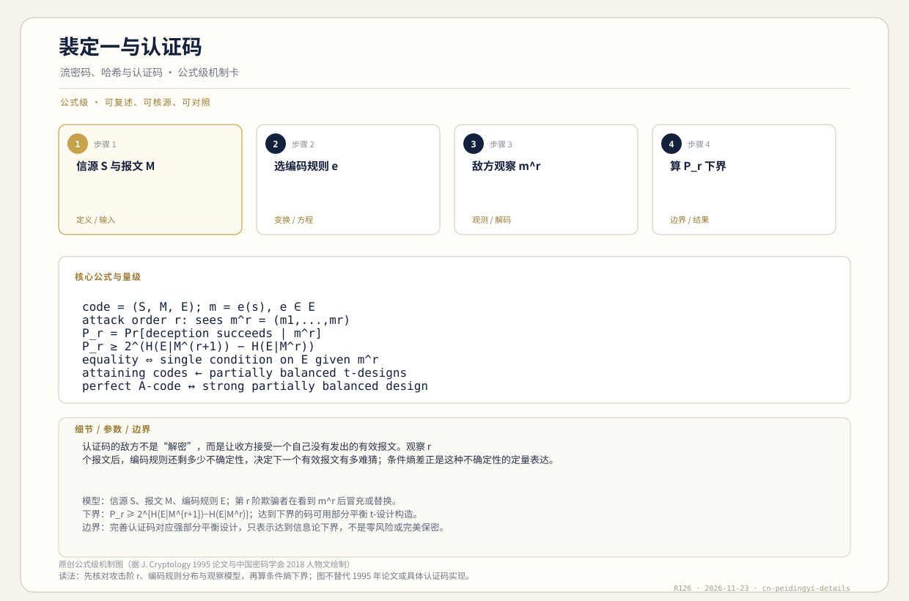

原理与机制
中国密码史：裴定一与认证码（Pei Dingyi and Authentication Codes）。### 认证码三方模型
认证码由信源集合 S、报文集合 M、编码规则集合 E 组成；发方选 e∈E 把信源 s 编成报文 m=e(s)，收方用同一 e 验证。敌方可在看到 r 个报文 m^r 后发动第 r 阶欺骗：冒充或替换成有效报文。### 信息论下界
Pei 1995 年给出第 r 阶欺骗成功概率 P_r 的信息论下界：P_r ≥ 2^{H(E|M^{r+1})−H(E|M^r)}。直觉是：观察 m^r 后，编码规则的不确定性越小，敌方越容易猜中下一个有效报文；下界由条件熵差控制。等号条件被化成一个单一要求，并可用部分平衡 t-设计构造达到下界的码。### 完善认证码
若认证码达到下界，Pei 用强部分平衡设计（SPBD）刻画其组合结构，称这类码为完善认证码；他还用有限域上的有理正规曲线构造 SPBD。这里的“完善”是信息论意义下达到下界，不是“绝对不可攻破”。

为什么重要
认证码保护完整性，不保护保密性；它与 MAC 的计算安全不同，追求无条件/信息论安全。Pei 的下界把“敌方欺骗能到什么程度”变成可算的条件熵，并把达到下界的码与组合设计相连，使认证码从工程构造变成可证明的组合对象。
应用与实例
1.明确攻击阶 r：敌方在发送前（r=0）还是看到若干报文后（r≥1）欺骗。2.指定信源、报文、编码规则及概率分布；没有分布就无法算条件熵。3.计算 H(E|M^{r+1}) 与 H(E|M^r)，得到 P_r 下界。4.若目标是达到下界，选强部分平衡设计或部分平衡 t-设计构造认证码，并验证每个 m^r 的等号条件。5.记录密钥管理、编码规则更新和验证方式；信息论安全不替代实现安全。### 不能怎么用
不能把 P_r 下界当成实际成功率；不能在分布未知时硬套公式；不能把认证码当加密算法；不能把“完善认证码”说成无需密钥管理或抗任何攻击。
边界与攻击面
1.模型不符：信源/报文/编码规则或敌方观察模型与定理假设不一致，下界不适用。2.分布未知：条件熵依赖编码规则与报文的联合分布；实际部署若偏离设计分布，界会变。3.攻击阶越界：r 只覆盖定理定义的欺骗阶；更高阶、合谋或物理层攻击不在内。4.密钥管理：编码规则泄露、复用或随机源失效会绕过信息论界。5.实现缺陷：侧信道、错误注入、验证逻辑漏洞不因组合设计而消失。6.“完善”误读：达到下界不等于零风险，也不等于完美保密。
历史与背景
裴定一 1959 年入中国科技大学数学系，1964 年考取华罗庚研究生；1980 年前后在普林斯顿大学解决权 3/2 模形式结构问题；1981 年回国后转向密码学。1995 年在 Journal of Cryptology 8(4):177–188 发表认证码信息论下界论文，2006 年在 CRC 出版《Authentication Codes and Combinatorial Designs》；1992 年获国家科技进步一等奖（集体），2007–2015 年任中国密码学会理事长。
时间线、证据与争议
登记年份以来源账本为准；背景是理论基础中此前技术、机构与冲突的累积；过程只写有来源支持的参与者、地点与行动；结果写它改变了哪些标准、机器、课程或政策；争议写二手叙述与一手材料的差距。来源包括：Wikipedia search entry for 裴定一与认证码；《密码简史：穿越远古 展望未来》（杨义先、钮心忻，电子工业出版社，2020，ISBN 9787121398711）。
不要把“发生过”写成“已证明”，也不要把事件标题扩写成机制结论；没有日期的节点只作逻辑位置。
逐步示例与核验
事件时间线模型
背景 → 过程 → 结果 → 争议。背景写此前技术/制度；过程写可核参与者与时间；结果写后续标准、机器、课程或政策；争议写二手叙述与一手材料的差距。
参考出处
- Wikipedia search entry for 裴定一与认证码. https://zh.wikipedia.org/w/index.php?search=%E8%A3%B4%E5%AE%9A%E4%B8%80%E4%B8%8E%E8%AE%A4%E8%AF%81%E7%A0%81
- 《密码简史：穿越远古 展望未来》（杨义先、钮心忻，电子工业出版社，2020，ISBN 9787121398711）. https://book.cppinfo.cn/Encyclopedias/home/index?id=3730464